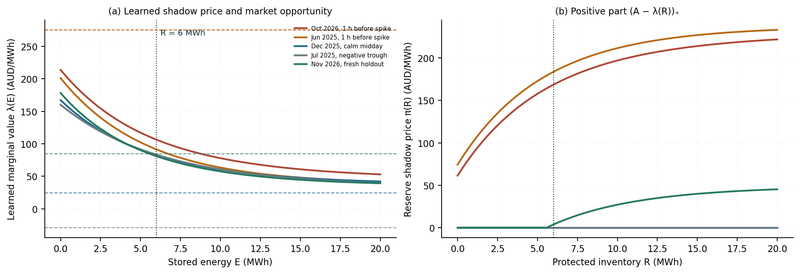
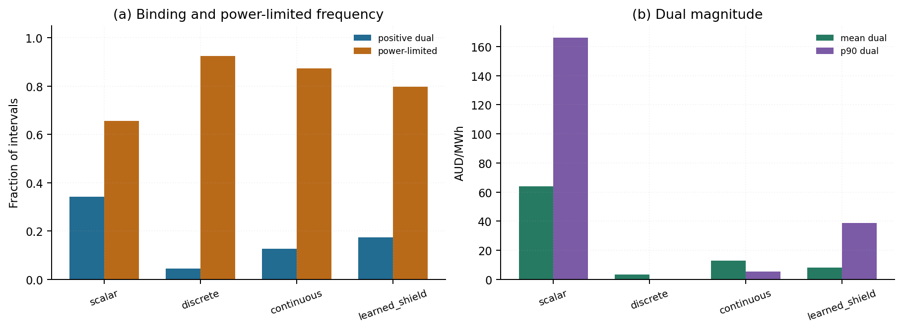
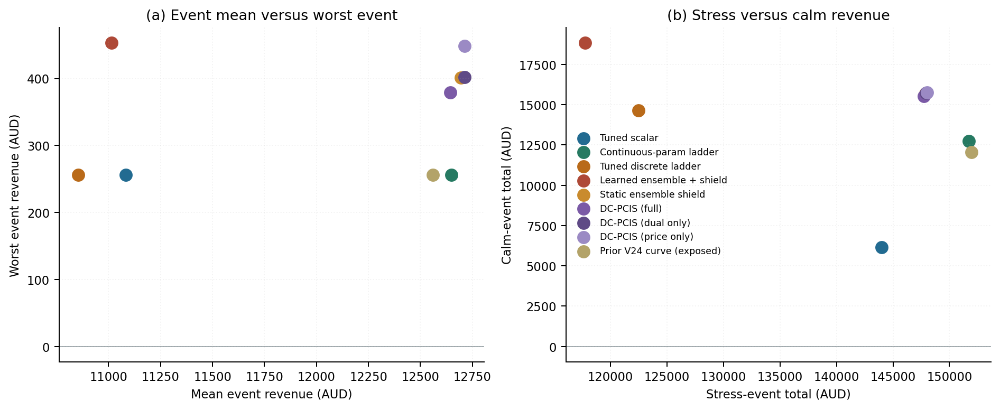
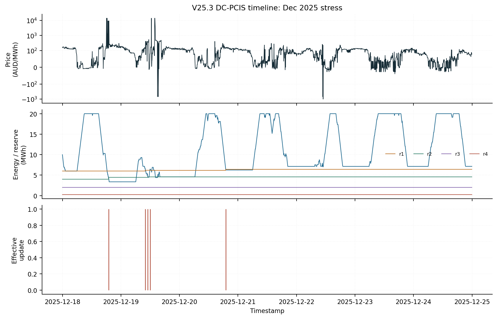

V25–V25.3 · Theory
Protection can substitute
for learning.
The empirical result is simple: once a hard inventory floor binds, the learned inventory value stops setting ordinary discharge. This page derives that statement, identifies the shadow price of protection, and shows when the learned value still matters.
The proof is a one-step concave-KKT argument. The full scenario LP is a risk-weighted implementation of the same multiplier mechanism; the proof page states the extension and its limits.
01 / One-step model
Discharge, floor,
continuation value.
Energy E MWh, price p AUD/MWh, wear w AUD/MWh, discharge efficiency ηd, interval Δt. The controller chooses discharge d ≥ 0 MW.
The shield is a floor on stored energy: d ≤ dR = (E − R)ηd / Δt. Define market marginal revenue per MWh of stored energy:
02 / Unconstrained and shielded optima
The learned value
sets the interior action.
Differentiating the objective gives
For p > w, the unconstrained interior action d* satisfies
The shielded action is simply
If d* is below the floor, the shield is slack and the learned value sets d. If d* is above the floor, the shield is binding and dR is fixed by R.
03 / Shadow price
Reserve–learning substitution theorem
In the binding regime d* > (E − R)ηd/Δt, the shadow price of protection is
The LP multiplier for the shield row is μR = (Δt/ηd)(A − λ(R))+. The protected value decomposes as
where J0 is the unconstrained value at R = 0.
Proof sketch
- Slack case. If d* ≤ (E−R)ηd/Δt, increasing R locally does not change d*, so ∂JR/∂R = 0 and πR = 0.
- Binding case. If the floor binds, dR = (E−R)ηd/Δt and E′ = R. Therefore JR = (p−w)(E−R)ηd + V(R), and ∂JR/∂R = λ(R) − A.
- Positive part. Since the shield binds only when the unconstrained action wants at least as much discharge, A ≥ λ(R), with equality only at the degenerate boundary. Hence πR = (A − λ(R))+.
- Integral. Integrate ∂JR/∂R = −πR from 0 to R: JR = J0 − ∫0R πr dr.
04 / KKT interpretation
When the floor binds,
the action is not learned.
The shield row is g(d) = d − dR ≤ 0 with multiplier μR ≥ 0. KKT gives
If μR = 0, the shield is slack and λ(R) determines the action. If μR > 0, the shield binds, the action is the floor, and the multiplier is the price of relaxing it.
Corollary: value gap at the floor
If the shield binds for two continuation values VL and VH, then dR is identical and JR(VL) − JR(VH) = VL(R) − VH(R). The learned value only matters through its value at the protected inventory level.
05 / Empirical illustration
The stress shield binds.
The calm shield does not.

| Context | Lagged price | A | λ(6) | π6 | Regime |
|---|---|---|---|---|---|
| Oct 2026, 1 h before spike | 299.81 | 274.9 | 106.3 | 168.6 | binding |
| Jun 2025, 1 h before spike | 299.99 | 275.1 | 91.3 | 183.8 | binding |
| Nov 2026, latest window | 99.02 | 84.5 | 80.8 | 3.7 | nearly binding |
| Dec 2025, calm midday | 35.46 | 24.2 | 82.1 | 0.0 | slack |
| Jul 2025, negative trough | −20.37 | −28.8 | 83.2 | 0.0 | slack |
These are one-step illustrative estimates
The table uses lagged prices and a critic slice at R = 6. It is not the dual of the full scenario LP. V25 extracts the actual reserve-row duals from HiGHS and reports them separately.
06 / Full-LP duals
The one-step number
is not the LP dual.
The six-band scenario LP adds a reserve row for each threshold. For row k, HiGHS returns the derivative of the minimized cost with respect to the row's right-hand side. The economic shadow price of protection is
The normalized discharge multiplier is μk = (Δt/ηd)πk in AUD/MW. In a single-scenario LP with a linear continuation value, this reduces exactly to π = (A − λ)+.
Power-limited corollary
With battery power limit q̄d, the one-step diagnostic is
For a 5 MW battery and five-minute intervals, (E − R) must be below about 0.439 MWh for a 6 MWh reserve to bind. At high state of charge the power limit binds first and the reserve row is slack.
The full-LP dual is a local, risk-weighted sensitivity. With mean–CVaR, the effective scenario weights are nonnegative and sum to 1 + β; the scenario net gaps can be signed. The shared reserve row does not generally reduce to a scalar probability-weighted sum. V25 reports every row's dual, slack, tight flag and binding flag, and uses the maximum-dual row for the one-step comparison.
| Controller | Positive dual | Power-limited | Raw one-step corr. | Scenario one-step corr. |
|---|---|---|---|---|
| Tuned scalar R=16 | 34.3% | 65.7% | 0.108 | 0.933 |
| V25 continuous ladder | 12.6% | 87.4% | 0.094 | 0.811 |
| V25 discrete ladder | 4.5% | 92.6% | 0.099 | 0.658 |
| Fresh critic + shield | 17.3% | 79.7% | 0.090 | 0.701 |
The current-price one-step formula is a poor proxy for the actual LP dual. The scenario-average diagnostic is much better because the reserve row is shared across the scenario set. The finite-difference check matches the HiGHS dual to a mean relative error of 8.3 × 10−12.
The ladder is a nested band-conditional guarantee, not a physical state floor. The January 2026 timeline shows the maximum-dual floor near 2.7 MWh while the battery falls to about 0.5 MWh during a spike above 15,000 AUD/MWh: the 15,000 band can still clear and consume the reserve. Above the highest threshold no additional total floor is guaranteed.
The strict chronological test is a negative result for V24 dominance
The clean V25 continuous and discrete ladders are slightly worse than the tuned scalar on event mean and trade severe-stress revenue for calm-period revenue. The prior V24 curve remains the best event-mean controller, but V24 selected it on a validation set that included January 2026, a V25 test stress window. Its advantage is consistent with validation leakage, not demonstrated forward-time generalization. The correct conclusion is a stress/calm frontier, not a single winner.

Full V25 dual derivation and power-limit corollary · V25 chronological report
07 / Dual-calibrated shield
Price the floor.
Don't double-count the critic.
V25.3 adds a dual-calibrated price-contingent shield. At each calibration time it solves the scenario LP, reads the reserve-row dual πk, and compares it with the ensemble risk premium:
The reserve moves in the direction of the gap, is projected onto the monotone ladder, is gated to binding and above-floor rows, and is frozen against relaxation during a spike. The full-LP dual already contains the critic mean, so comparing it with λ + κσ would double-count λ; the full method uses the risk premium only, while the price-only ablation compares λ + κσ with the market opportunity.
Fixed point is a calibration condition
At an interior fixed point, πk = κσk (full-LP accounting) or λk + κσk = Ak (price accounting). This is a value-matching condition, not a global optimality theorem. It says the marginal cost of protection equals the risk-adjusted marginal value of protected inventory.
The band-conditional inventory guarantee is preserved by the monotone projection. The ensemble σ is seed dispersion, not a calibrated probability. The update is a tracking calibration, not a convergent optimal-control algorithm.
The shield-validation block makes the identification problem concrete. The full hourly rule ties the static shield on the selection score (13,831 vs 13,831 AUD) while improving the worst event by 194 AUD at a 48 AUD mean cost; the price-opportunity arm is the only one that improves both mean and minimum. The 24-hour arm is a no-op: every daily configuration reproduces the static score exactly because no reserve row is power-unconstrained at the daily sampling times. That is the theory's prediction, not a tuning accident.
On the frozen 14-window panel the hand ladder earns +1,567 AUD per event over the tuned scalar (exact p = 0.008; event bootstrap CI [591, 2,629]; 18-controller Holm p = 0.133). The ten-critic ensemble loses 1,637 AUD per event to it, with the loss concentrated in January 2026 and October 2026 stress. The DC rule changed the ladder on only 25 of 2,304 scheduled recalibrations (1.09%) and is 49 AUD per event worse than the static shield (p = 0.047). The static hand-designed shield, not the dual feedback, carries the result.


08 / Scope
What the theorem
does and does not say.
It does
Explain why a binding shield makes ordinary discharge independent of the learned value; identify the exact shadow price of protection; decompose protected value into unconstrained value minus protection cost; and bound the shielded value gap at the floor.
It does not
Prove that the empirical learning premium is monotone in R for every value function. That needs additional ordering assumptions. It also does not claim the learned value is useless when the shield is slack, or that the scenario-LP/CVaR implementation reduces to the scalar formula.
Full proof and citations
Full derivation and proof
V24 theory report
Literature boundary